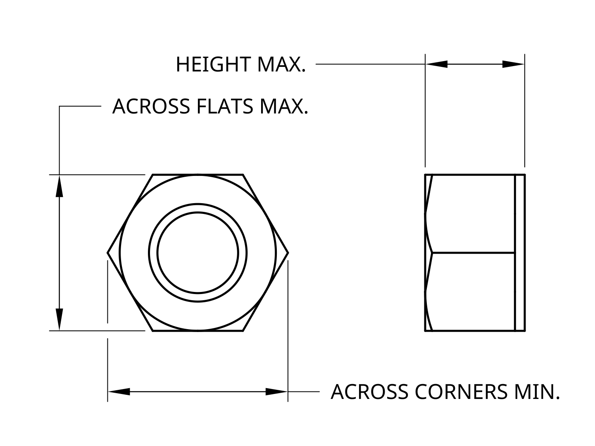
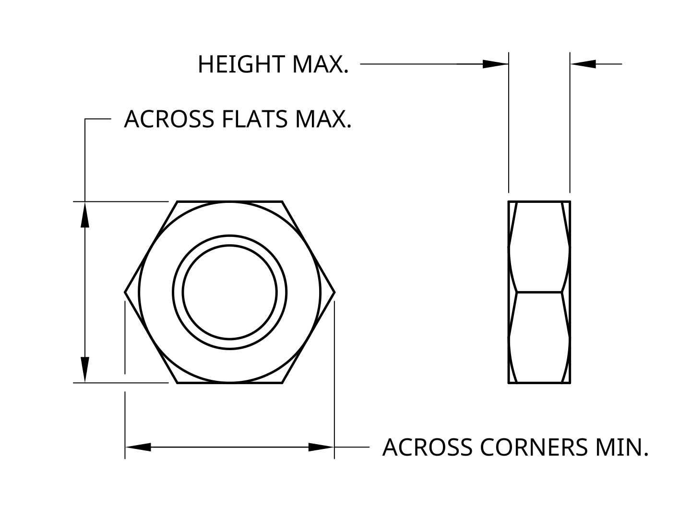

☀
☾
Mech Refs
Socket Screw Selector
Nut Selector
Washer Selector
Nut Selector
(ISO 4032, 4033, 4035, 4161)
Hide Flowchart
M6
I Crave
Detail!
Nut Selection Flowchart
Standard Nut - ISO 4032
Tall Nut - ISO 4033

Thin Nut - ISO 4035

Flanged Nut - ISO 4161